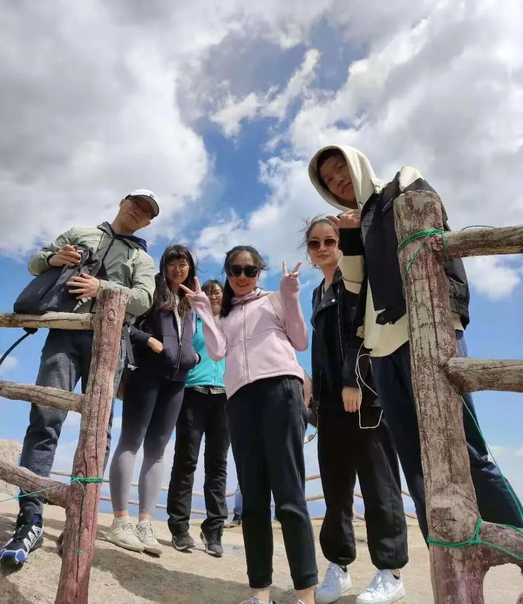
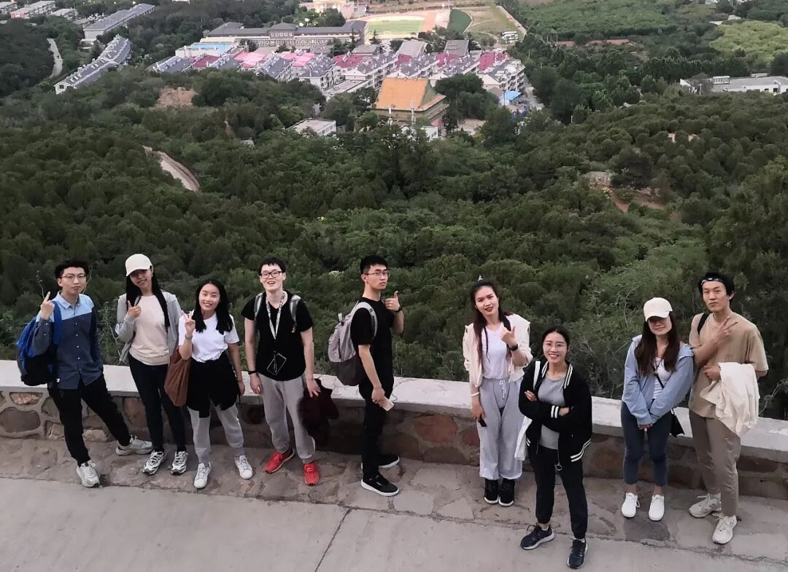
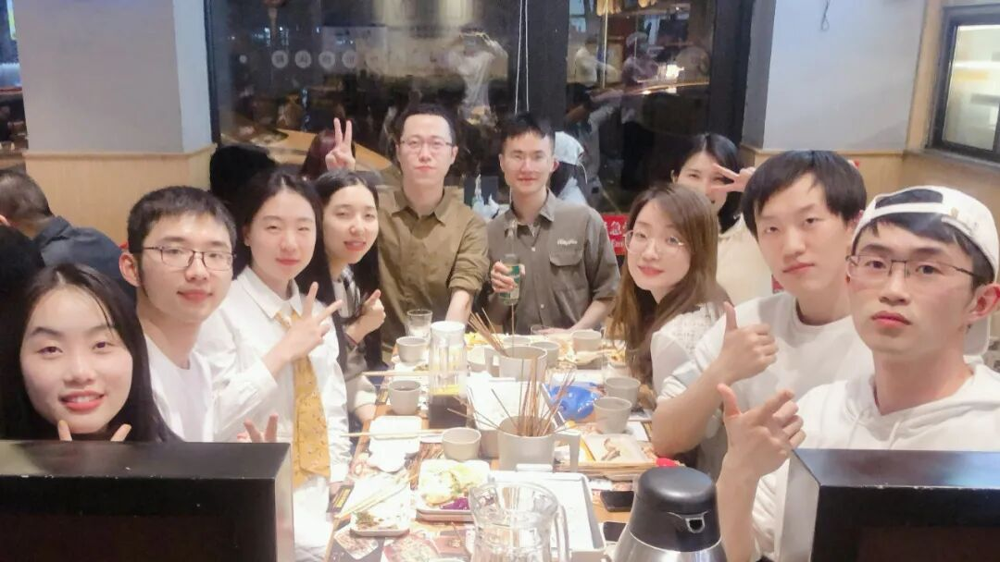
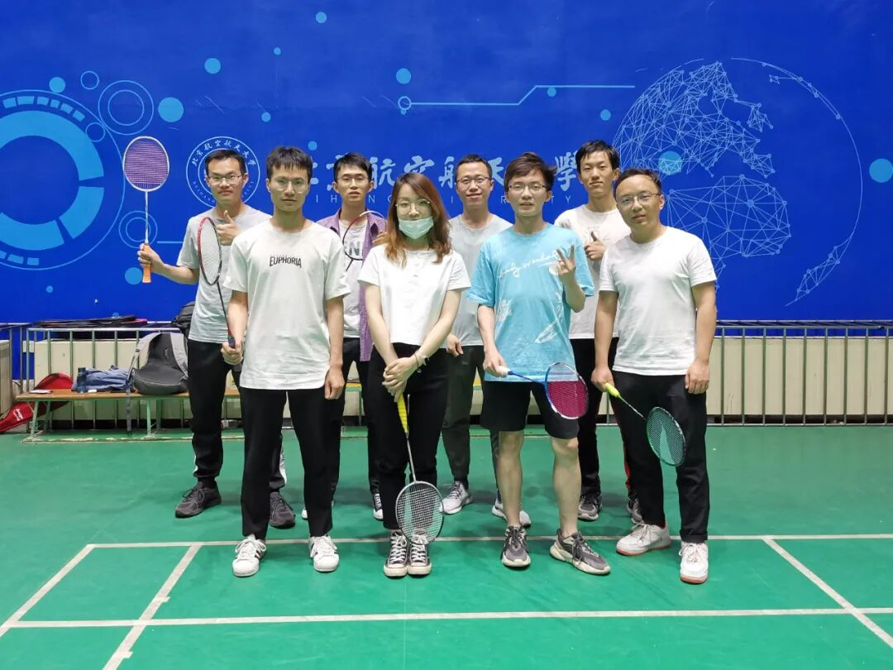
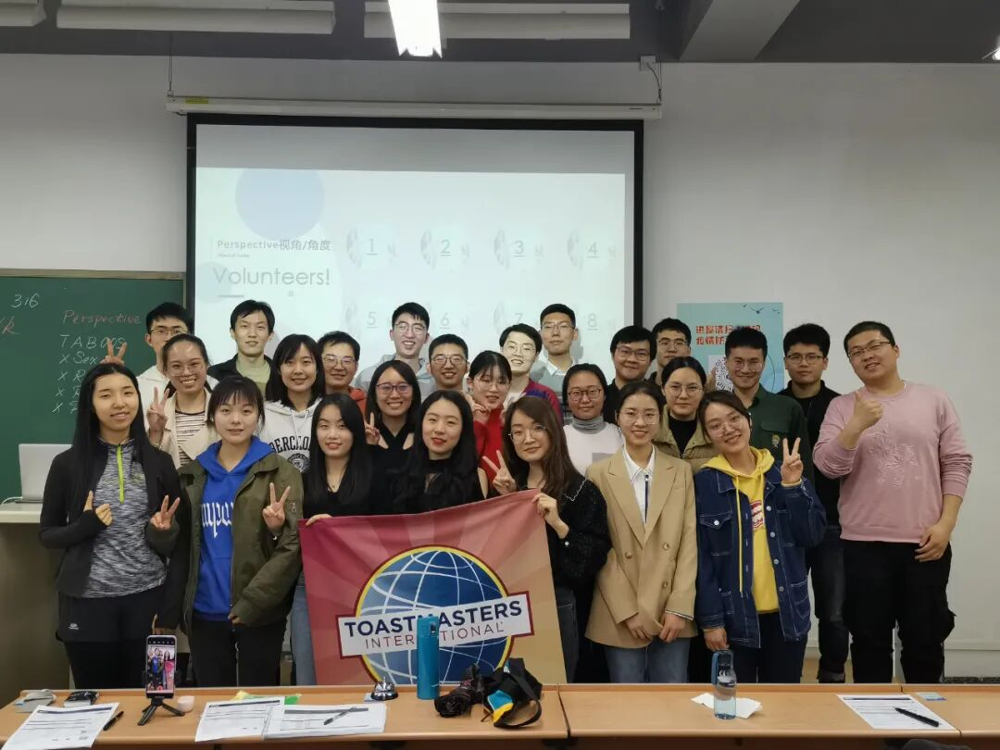

你好，小可爱
很高兴遇见你
此刻的你或许在想
头马是个什么马？
马拉松俱乐部？马术俱乐部？
No no no no
从现在起！
不要眨眼！
北航头马！
为你定义！
最秀社团！
Here we go！
01
前方高能！
北航头马俱乐部是一个专业化、高标准的英语交流社团，这里为同学们搭建开放包容的交友平台，旨在提升同学们的公共演讲和人际沟通能力，培养同学们的领导力和自信心。
请说明白！
你还在为自己蹩脚的口语而自卑吗？
你还在为自己紧张的演讲而苦恼吗？
你还在为自己孤单的灵魂而惆怅吗？
那么恭喜你，找对地方了
天呐，我有点心动了！
还有什么惊喜是我不知道的？
能更具体地介绍一下吗？
02
这里是中英文演讲平台 ·
每次会议都有严谨的议程设置和明确的角色安排，社员在担任角色的过程中相应的能力得到锻炼。在每次会议的即兴演讲环节，每个人都有机会上台一展风采，从此跟紧张怯场说再见！此外，在定期举办的中英文演讲比赛中还会有与各路大神切磋较量的机会，在交流与竞争中不断进步！
这里有丰富的团建生活 ·





在这里，我们一起运动、一起聚餐、
一起打球、一起遛弯、
一起春游、一起爬山，
来到这里，你将不再孤单

都看到这里了，真的没有心动吗？
不要犹豫了！
5月28日（周五）晚7：00
期待在新主楼 B204 教室
与你相遇！
Beihang Toastmasters Club

欢迎参加北航头马Open Day！
图：Kevin
排版|文：Evelyn Michael
原文链接（公众号关闭后可能失效）：
https://mp.weixin.qq.com/s/KF0JgWgPLe5EUY-OBTpzyQ
https://mp.weixin.qq.com/s/KF0JgWgPLe5EUY-OBTpzyQ
第 524/539 篇 · 北航Toastmasters英文演讲俱乐部公众号存档
本页为抢救式本地归档，图文已永久保存。
本页为抢救式本地归档，图文已永久保存。